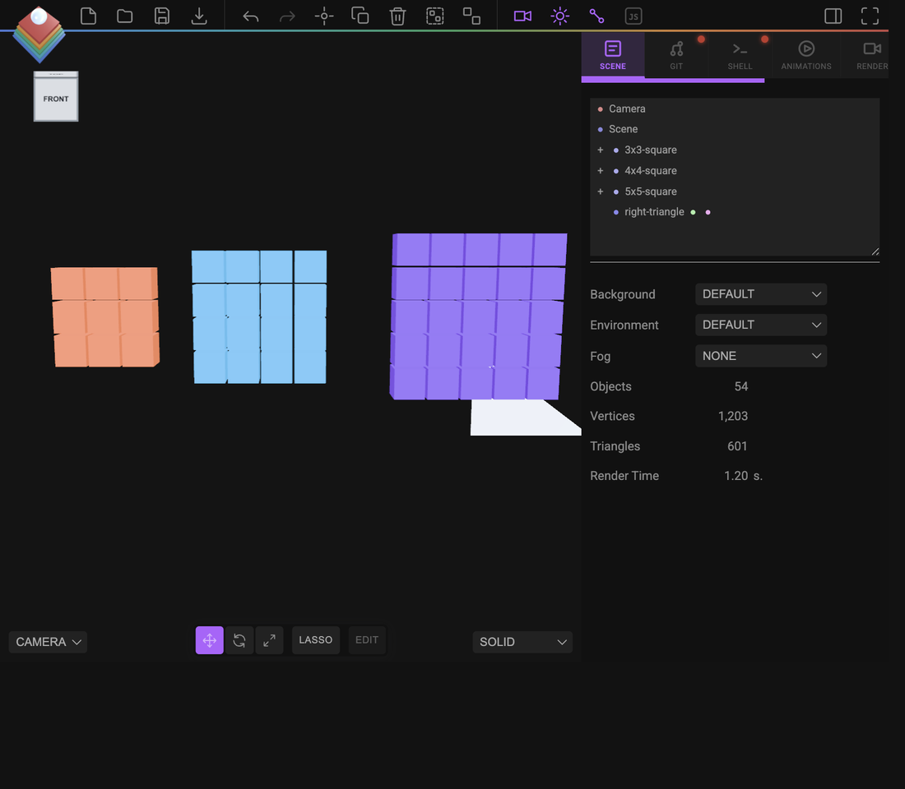

Make a Pythagorean-theorem short
Three squares, a right triangle, a classic dissection proof, and a living end-card — built entirely by hand, no AI, via the JS Shell and the Universal Timeline. Open the editor, open the Shell tab, and paste each block in order.
editor.execute(...) under the hood) — the Shell is just the fastest way to author them. You can always inspect or hand-tweak the result afterward in the Outliner/Object panel; nothing here is a special "script mode."1 Build the three squares
A square-of-side-n is just an n×n grid of unit cubes, grouped. Paste this once to get a helper, then call it three times for the 3², 4², and 5² squares.
function buildSquare(name, n, color) {
const group = new Group();
group.name = name;
const step = 1.08; // cell size + a small gap
const offset = (n - 1) * step / 2;
for (let row = 0; row < n; row++) {
for (let col = 0; col < n; col++) {
const cube = new Mesh(
new BoxGeometry(1, 1, 1),
new MeshStandardMaterial({ color })
);
cube.position.set(col * step - offset, row * step - offset, 0);
group.add(cube);
}
}
editor.execute(new AddObjectCommand(editor, group));
return group;
}
buildSquare('3x3-square', 3, 0xff8a5c);
buildSquare('4x4-square', 4, 0x5cc8ff);
buildSquare('5x5-square', 5, 0x8a5cff);Give every cell an addressable class so the timeline can target "all cubes in this square" as one selector:
$S('#3x3-square > *').addClass('cube');
$S('#4x4-square > *').addClass('cube');
$S('#5x5-square > *').addClass('cube');Now position the three squares (side by side for now — you'll move the 3×3 and 4×4 onto the 5×5 during the reveal) and add a right triangle whose legs equal 3 and 4:
$S('#3x3-square').moveTo(-6, 0, 0);
$S('#4x4-square').moveTo(-1, -0.5, 0);
$S('#5x5-square').moveTo(6, 0, 0);
const tri = new Mesh(
new ShapeGeometry(new Shape([
new Vector2(0, 0),
new Vector2(4, 0),
new Vector2(0, 3),
])),
new MeshStandardMaterial({ color: 0xd9dde3 })
);
tri.name = 'RightTriangle';
editor.execute(new AddObjectCommand(editor, tri));
$S('#RightTriangle').moveTo(-3.5, -2, 0);
2 Label the squares
Text isn't scriptable from the Shell directly (font loading needs the UI's loader) — use the Text stencil three times, then rename and set each one's content. This is the one step that's click-driven rather than pasted.
- Open Stencils → Mesh → Text and click it three times — you get three objects named
Text,Text 2,Text 3, all reading "THREE.JS". - Select the first one. In the Object panel, set Name to
three. In the Geometry panel, set Text to3². - Select the second. Name it
four, set its Geometry → Text to4². - Select the third. Name it
eqn, set its Geometry → Text to a single placeholder character like-— its real content is authored entirely via.change()in the next step, so anything here is just a non-empty placeholder.
Now position and class them from the Shell like anything else:
$S('#three').moveTo(-6, -2.2, 0.3);
$S('#four').moveTo(-1, -3, 0.3);
$S('#eqn').moveTo(0, 4, 0.3);
$S('#three, #four, #eqn').addClass('label');MeshStandardMaterial) — against a busy or colorful background they can wash out. Skip to step 6 before you judge final contrast.3 Choreograph the entrance
Everything below is one clock. .at(t) places an event at an absolute time in seconds; chained .animate() calls without .at() just queue after the previous one on that same object.
$S('#RightTriangle').at(0).fadeIn(1.5);
$S('#3x3-square').at(1).fadeIn(1);
$S('#4x4-square').at(1.5).fadeIn(1);
$S('#eqn').at(2).change('a\u00B2 + b\u00B2 = c\u00B2');4 The dissection reveal
This is the actual proof, staged as motion: the 3×3 and 4×4 squares' cells migrate onto the 5×5 square's cells. moveToEach pairs sources to targets positionally — split the 5×5's 25 cells into a 9-cell group and a 16-cell group first so the counts line up.
// however you partition the 25 cells into a 9-set and a 16-set —
// by hand-picked indices, or however suits your layout:
const cells = $S('#5x5-square .cube').nodes;
cells.slice(0, 9).forEach(c => $S(c).addClass('cellA'));
cells.slice(9, 25).forEach(c => $S(c).addClass('cellB'));
$S('#3x3-square .cube').at(4).moveToEach('#5x5-square .cellA', 3000);
$S('#4x4-square .cube').at(4).moveToEach('#5x5-square .cellB', 3000);
$S('#eqn').at(5).change('9 + 16 = 25', { transition: 'fade', dur: 300 });Scrub the timeline (Animations tab) back and forth — the reveal is fully deterministic and reversible, because the destinations are baked from the 5×5 square's actual cell positions at compile time, not hand-typed coordinates. Move the 5×5 square and the reveal re-targets automatically.
5 Add a background
A flat default background reads as unfinished. makeTexture is a Shell helper — hand it a function that paints a 2D canvas, and it returns a ready-to-use texture:
scene.background = makeTexture((ctx, size) => {
const g = ctx.createLinearGradient(0, 0, 0, size);
g.addColorStop(0, '#1b2340');
g.addColorStop(0.55, '#141a2e');
g.addColorStop(1, '#0a0d18');
ctx.fillStyle = g;
ctx.fillRect(0, 0, size, size);
}, 512);6 Keep labels readable against it
Text meshes lit only by scene lights can look faint against a moody background. Give them a bit of their own glow so they read consistently regardless of lighting or backdrop:
$S('.label').nodes.forEach(o => {
o.material.emissive = new Color(0xffffff);
o.material.emissiveIntensity = 0.7;
o.material.needsUpdate = true;
});7 Add the living end-card
Open Stencils → Mesh → Call card and click it (or drag it into the viewport) — it inserts an addressable plane that embeds the current /about/callcard live, already fitted to the current viewport camera (filling the frame, front-face forward and readable). For this reveal we want the card to only fill the frame at the end of a push-in, so reposition it behind where the camera starts instead, scaled up, hidden until the reveal:
const cam = camera; // the live viewport camera
const startPos = cam.position.clone();
const startLookAt = new Vector3(0, 0, 0); // wherever cam is already aimed
const dir = startLookAt.clone().sub(startPos).normalize();
const cardScale = 8;
const cardPos = startPos.clone().sub(dir.clone().multiplyScalar(15)); // behind the camera
$S('#callcard').moveTo(cardPos.x, cardPos.y, cardPos.z);
$S('#callcard').scale(cardScale);lookAt() aims the plane's local -Z at its target, which points the FRONT (+Z) face away from it, so follow with a 180° turn to flip the front face back around. This works for any relative angle, not just "same side" vs. "opposite side": $S('#callcard').nodes[0].lookAt(startPos); $S('#callcard').nodes[0].rotateY(Math.PI); (the same math fitCallcardToCamera() in docs/editor/js/Callcard.js uses to auto-orient a freshly-added card). Getting the front/back backwards doesn't hide the card (the material is double-sided) — it shows the card mirrored, which is the tell. It starts effectively hidden by being fully transparent ($S('#callcard').nodes[0].material.opacity = 0); fade it in during the reveal below rather than toggling visibility by hand.Now the reveal: a two-leg push-in, not a snap-to-position. Compute the distance where the card's real width exactly spans the camera's horizontal FOV, land a little closer than that (a small overfill reads as "fills the frame" better than an exact fit), and turn to face it while closing that distance:
const fov = 36, aspect = 16 / 9;
const cardWidth = 1.8 * cardScale;
const hFov = 2 * Math.atan(Math.tan(THREE.MathUtils.degToRad(fov) / 2) * aspect);
const fillDistance = (cardWidth / 2) / Math.tan(hFov / 2) * 0.85; // slight overfill
const posAtDistance = (d) => cardPos.clone().add(dir.clone().multiplyScalar(d));
$S('camera').at(8).animate({ to: { position: posAtDistance(11).toArray() }, lookAt: cardPos.toArray() }, 2500, 'ease-in-out');
$S('camera').at(10.5).animate({ to: { position: posAtDistance(fillDistance).toArray() }, lookAt: cardPos.toArray() }, 3000, 'ease-in');
$S('#callcard').at(8.3).fadeIn(2.2);Note the constant FOV across both legs — animating FOV and distance together is a dolly-zoom (a deliberate vertigo effect), not what a clean reveal wants. And note at(8) — a full second after the dissection reveal (started at 4, 3s long) actually finishes at 7. Don't start this beat while cubes are still mid-flight; let the proof land, hold for a moment, then push in.
8 Render it
- Open the Render tab.
- Pick a resolution/FPS (portrait crops are a manual resolution choice today — the card itself is authored vertical/centered so it composes correctly once cropped).
- Click Render & Export and wait — rendering is real-time (a 60s timeline takes ~60s to render).
- The card is re-fetched and re-baked fresh at render time — edit
/about/callcardlater and every future render picks up the change automatically, with no edits to this scene.